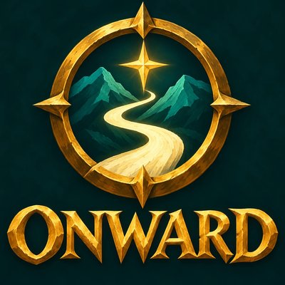

<!doctype html>
<html>
<head>
<meta charset="utf-8">
<title>Onward gallery</title>
<link rel="preconnect" href="https://fonts.googleapis.com">
<link href="https://fonts.googleapis.com/css2?family=Poppins:wght@400;500;600;700&display=swap" rel="stylesheet">
<style>
/* Onward's colours (Skin.lua S.ONWARD and UI.lua C) */
:root {
  --accent: #E3C154; --tint: 4, 32, 32; --rim: rgba(227, 193, 84, .28);
  --text: #EDF0F5; --sub: #9EA6B3; --dim: #737A85;
  --accept: #FFD140; --turnin: #66D973; --quest: #73B3FF; --travel: #BF99FF; --warn: #FF7366;
}
* { box-sizing: border-box; margin: 0; padding: 0; }
html, body { width: 1920px; height: 1080px; overflow: hidden; background: #0b0d10; font-family: Poppins, sans-serif; color: var(--text); }
.stage { position: absolute; inset: 0; background-size: cover; background-position: center; }
.stage::after { content: ""; position: absolute; inset: 0;
  background: linear-gradient(90deg, rgba(6,10,12,.90) 0%, rgba(6,10,12,.70) 32%, rgba(6,10,12,.05) 60%, rgba(6,10,12,.12) 100%),
              radial-gradient(ellipse at 70% 50%, transparent 50%, rgba(0,0,0,.35) 100%); }
.copy { position: absolute; left: 120px; top: 0; bottom: 0; width: 640px; display: flex; flex-direction: column; justify-content: center; z-index: 2; }
.brand { display: flex; align-items: center; gap: 16px; margin-bottom: 44px; }
.brand img { width: 64px; height: 64px; }
.brand span { font-weight: 600; font-size: 22px; letter-spacing: .32em; color: var(--accent); }
.kicker { font-size: 18px; font-weight: 600; letter-spacing: .22em; text-transform: uppercase; color: var(--accent); margin-bottom: 18px; }
h1 { font-size: 64px; line-height: 1.08; font-weight: 600; letter-spacing: -.01em; margin-bottom: 28px; text-wrap: balance; }
.copy p { font-size: 25px; line-height: 1.5; color: #c4cad3; max-width: 600px; }
.copy ul { list-style: none; margin-top: 30px; display: grid; gap: 14px; }
.copy li { font-size: 22px; color: #c4cad3; padding-left: 30px; position: relative; }
.copy li::before { content: ""; position: absolute; left: 0; top: 11px; width: 12px; height: 12px; border-radius: 3px; background: var(--accent); transform: rotate(45deg); }
.ui { position: absolute; z-index: 2; transform-origin: top left; }

/* glass, as the addon stacks it: tint, sheen, lit rim (no blur: WoW can't blur) */
.glass { position: relative; border-radius: 12px; background: rgba(var(--tint), .80);
  box-shadow: 0 10px 28px rgba(0,0,0,.55), inset 0 0 0 1px var(--rim); overflow: hidden; }
.glass::before { content: ""; position: absolute; inset: 0; border-radius: 12px; pointer-events: none;
  background: linear-gradient(180deg, rgba(255,255,255,.07), rgba(255,255,255,0) 46px); }
.glass::after { content: ""; position: absolute; inset: 0; border-radius: 12px; pointer-events: none;
  box-shadow: inset 0 1px 0 rgba(255,255,255,.18); }
.ico { display: inline-block; width: 14px; height: 14px; background: var(--sub); -webkit-mask: var(--m) center/contain no-repeat; mask: var(--m) center/contain no-repeat; flex: none; }

/* panel */
.panel { width: 372px; padding: 12px 14px 14px; }
.hdr { display: flex; align-items: center; gap: 8px; }
.hdr .title { color: var(--accent); font-size: 15px; font-weight: 500; flex: 1; white-space: nowrap; overflow: hidden; text-overflow: ellipsis; }
.hdr .count { color: var(--dim); font-size: 12px; }
.hdr .icons { display: flex; gap: 7px; align-items: center; }
.bar { height: 3px; border-radius: 2px; background: rgba(255,255,255,.08); margin: 9px 0 12px; position: relative; }
.bar i { position: absolute; left: 0; top: 0; bottom: 0; border-radius: 2px; background: var(--accent); box-shadow: 0 0 8px var(--accent); }
.card { border-radius: 10px; background: rgba(255,255,255,.05); box-shadow: inset 0 0 0 1px rgba(255,255,255,.07); padding: 10px 12px 11px; position: relative; }
.verb { font-size: 10.5px; font-weight: 600; letter-spacing: .12em; }
.later { position: absolute; right: 9px; top: 8px; font-size: 11px; color: var(--sub); border: 1px solid rgba(255,255,255,.14); border-radius: 6px; padding: 1px 9px; }
.card h2 { font-size: 19px; font-weight: 500; line-height: 1.25; margin-top: 2px; }
.loc { font-size: 12px; color: var(--sub); margin-top: 1px; }
.obj { margin-top: 9px; }
.obj .row { display: flex; justify-content: space-between; font-size: 13.5px; }
.obj .row b { font-weight: 500; }
.obj .row.done { color: var(--dim); }
.obj .row.done b { text-decoration: line-through; text-decoration-color: rgba(255,255,255,.25); }
.obj .track { height: 3px; border-radius: 2px; background: rgba(255,255,255,.08); margin-top: 4px; position: relative; }
.obj .track i { position: absolute; left: 0; top: 0; bottom: 0; border-radius: 2px; background: var(--quest); }
.drops { font-size: 11.5px; color: var(--sub); margin-top: 5px; line-height: 1.4; }
.drops em { font-style: normal; color: var(--turnin); }
.missed { font-size: 12px; color: var(--sub); margin-top: 10px; }
.next { margin-top: 12px; border-top: 1px solid rgba(255,255,255,.07); padding-top: 9px; }
.next .lbl { font-size: 10.5px; letter-spacing: .12em; color: var(--dim); font-weight: 600; margin-bottom: 4px; }
.next .it { display: flex; align-items: center; gap: 9px; font-size: 13.5px; color: #b9c0ca; line-height: 1.6; }
.next .it .ico { width: 11px; height: 11px; }
.party { margin-top: 10px; display: grid; gap: 3px; font-size: 12.5px; }
.party div { display: flex; gap: 10px; }
.hint { font-size: 12.5px; color: #DED09E; margin-top: 8px; line-height: 1.4; }

/* nav arrow */
.arrow { width: 300px; display: flex; flex-direction: column; align-items: center; }
.arrow .head { width: 104px; height: 104px; background: var(--ac, #82E078); -webkit-mask: url(assets/icons/arrow.png) center/contain no-repeat; mask: url(assets/icons/arrow.png) center/contain no-repeat;
  transform: rotate(var(--r, -20deg)); filter: drop-shadow(0 4px 10px rgba(0,0,0,.6)); }
.arrow .pill { margin-top: 8px; padding: 8px 18px 10px; text-align: center; border-radius: 10px; min-width: 250px; }
.arrow .d { font-size: 22px; font-weight: 600; }
.arrow .l { font-size: 14px; }
.arrow .s { font-size: 12.5px; color: var(--accent); }

/* guide list */
.picker { width: 440px; padding: 14px 18px 16px; }
.tabs { display: flex; gap: 22px; font-size: 17px; margin-bottom: 12px; }
.tabs .on { color: var(--accent); }
.tabs span { color: var(--sub); }
.g { display: flex; align-items: baseline; font-size: 15px; line-height: 2.05; }
.g .n { flex: 1; }
.g .r { color: var(--dim); font-size: 13.5px; width: 52px; text-align: right; }
.g .p { color: var(--accent); font-size: 13.5px; width: 46px; text-align: right; }
.g.rec .n { color: var(--accent); }
.g.rec .tag { color: var(--accent); font-size: 13px; margin-right: 8px; }
.g.dim .n { color: var(--dim); }

.toast { padding: 10px 16px; font-size: 14px; border-radius: 10px; }
.toast b { color: var(--accent); font-weight: 500; }
.chat { font-size: 15px; line-height: 1.55; text-shadow: 0 1px 2px #000; }
.chat .o { color: var(--accent); }
.swatch { position: absolute; z-index: 2; }
.swatch .name { font-size: 15px; font-weight: 600; letter-spacing: .14em; text-transform: uppercase; color: var(--accent); margin-top: 10px; text-align: center; }
</style>
</head>
<body>
<div class="stage" id="stage"></div>
<script>
const I = n => `<i class="ico" style="--m:url(assets/icons/${n}.png)"></i>`;
const IC = (n, c, s) => `<i class="ico" style="--m:url(assets/icons/${n}.png);background:${c};${s ? `width:${s}px;height:${s}px` : ''}"></i>`;
const icons = () => `<div class="icons">${IC('prev', 'var(--sub)')}${IC('next', 'var(--sub)')}${IC('list', 'var(--sub)')}${IC('nav', 'var(--accent)')}${IC('gear', 'var(--sub)')}${IC('collapse', 'var(--sub)')}</div>`;

function panel(o) {
  const obj = (o.obj || []).map(x => `<div class="obj"><div class="row ${x.done ? 'done' : ''}"><b>${x.t}</b><span>${x.n}</span></div>
     ${x.done ? '' : `<div class="track"><i style="width:${x.p}%"></i></div>`}${x.drops ? `<div class="drops">${x.drops}</div>` : ''}</div>`).join('');
  const next = (o.next || []).map(([v, c, t]) => `<div class="it">${IC(v, c)}${t}</div>`).join('');
  const party = o.party ? `<div class="party">${o.party.map(([n, c, s, sc]) => `<div><span style="color:${c}">${n}</span><span style="color:${sc}">${s}</span></div>`).join('')}</div>` : '';
  return `<div class="glass panel">
    <div class="hdr"><div class="title">${o.title}</div><div class="count">${o.count}</div>${icons()}</div>
    <div class="bar"><i style="width:${o.prog}%"></i></div>
    <div class="card">
      <div class="verb" style="color:${o.vc}">${o.verb}</div>${o.later ? '<div class="later">Later</div>' : ''}
      <h2>${o.h}</h2><div class="loc">${o.loc}</div>${obj}${o.hint ? `<div class="hint">${o.hint}</div>` : ''}
      ${o.missed ? `<div class="missed">${o.missed} missed ›</div>` : ''}${party}
    </div>
    ${next ? `<div class="next"><div class="lbl">NEXT</div>${next}</div>` : ''}
  </div>`;
}
const arrow = (d, l, s, r, ac) => `<div class="arrow"><div class="head" style="--r:${r}deg;${ac ? `--ac:${ac}` : ''}"></div>
  <div class="glass pill"><div class="d">${d}</div><div class="l">${l}</div>${s ? `<div class="s">${s}</div>` : ''}</div></div>`;

const STV = {
  title: 'Stranglethorn Vale (42-47)', count: '28/49', prog: 57, verb: 'LOOT', vc: 'var(--quest)', later: true,
  h: 'Skullsplitter Tusks', loc: 'Ruins of Zul\'Mamwe  ·  45.6, 38.6  ·  211 yd',
  obj: [{ t: 'Skullsplitter Tusk', n: '11/18', p: 61, drops: '11 in 30 kills (37%)  ·  server data 21%  ·  <em>luckier than average</em>  ·  ~19 more kills' }],
  missed: 2,
  next: [['complete', 'var(--quest)', 'The Singing Crystals'], ['accept', 'var(--accept)', 'Accept Message in a Bottle'],
         ['turnin', 'var(--turnin)', 'Turn in Message in a Bottle'], ['fly', 'var(--travel)', 'Fly to Booty Bay (Gringer)']],
};

const LOGO = `<div class="brand"><span>ONWARD</span></div>`;
const copy = (k, h, p, li) => `<div class="copy">${LOGO}<div class="kicker">${k}</div><h1>${h}</h1><p>${p}</p>${li ? `<ul>${li.map(x => `<li>${x}</li>`).join('')}</ul>` : ''}</div>`;
const at = (x, y, s, html) => `<div class="ui" style="left:${x}px;top:${y}px;transform:scale(${s})">${html}</div>`;

const CARDS = {
  hero: { bg: 'forest', html: () =>
    copy('Leveling guide for WoW Forever', 'Always know your next step.',
      'Onward reads your quest log and keeps up as you play: what to pick up, what to kill, where to hand it in, and the quickest way there.',
      ['97 zone guides, Alliance and Horde, levels 1 to 60', 'Picks the right guide and resumes where you are', 'Free, no account, no ads']) +
    at(1110, 150, 1.9, panel(STV)) + at(1180, 790, 1.0, '') },
  card: { bg: 'barrens', html: () =>
    copy('The step card', 'Everything this step needs, at a glance.',
      'Objectives with progress bars, where to go and how far, the drop rate you\'re actually getting, and what comes after.',
      ['Quests in the same spot are done together', 'Your drop luck against the expected rate', 'Push a quest to Later, or catch up on missed ones']) +
    at(1030, 130, 2.0, panel({ ...STV, title: 'The Barrens (17-25)', count: '41/88', prog: 46, h: 'Raptor Thievery', loc: 'Lushwater Oasis  ·  46.1, 37.4  ·  312 yd',
      obj: [{ t: 'Raptor Horn', n: '7/12', p: 58, drops: '7 in 16 kills (44%)  ·  server data 40%  ·  <em>about average</em>' },
            { t: 'Sunscale Feather', n: '3/3', done: true }],
      hint: 'Raptors roam the whole oasis; the east shore has the fewest players.',
      next: [['turnin', 'var(--turnin)', 'Turn in Raptor Thievery'], ['accept', 'var(--accept)', 'Accept Stolen Silver'],
             ['complete', 'var(--quest)', 'Lost in Battle']] })) },
  travel: { bg: 'durotar', html: () =>
    copy('Travel that thinks ahead', 'Flies when it\'s faster. Walks when it isn\'t.',
      'The arrow weighs running, flying and your hearthstone at your own speed, picks the flight for you, and knows when you need a boat.',
      ['Auto-picks the flight at the flight master', 'Boats and zeppelins between continents', 'Leads your ghost back to your body']) +
    at(960, 110, 1.45, arrow('640 yd', 'Fly: Booty Bay', 'to Grom\'gol, then Skullsplitter Tusks', -28)) +
    at(1440, 110, 1.45, arrow('2140 yd', 'Take the boat to Ratchet', 'from Booty Bay, then Feralas', 18)) +
    at(960, 560, 1.45, arrow('3850 yd', 'Hearth to Crossroads', 'hearthstone is ready, then Lost in Battle', -6)) +
    at(1440, 560, 1.45, arrow('148 yd', 'Back to your body', 'then The Singing Crystals', 40, '#CFE3FF')) },
  picker: { bg: 'swamp', html: () =>
    copy('Guides that fit you', 'The right zone, recommended.',
      'Onward suggests the guide that suits your level and the quests already in your log, shows how far you are through each, and moves on when one is done.',
      ['Levels 1 to 60, every zone, both factions', 'Profession guides from 1 to 300', 'Resumes from your quest history']) +
    at(1040, 130, 1.8, `<div class="glass picker"><div class="tabs"><div class="on">Leveling</div><span>Professions</span></div>
      ${[['Quest log (auto)', 'any', '', ''], ['› Stranglethorn Vale (42-47)', '', '57%', 'rec'], ['Riverglades (38-46)', '38-46', '66%', ''],
         ['Thousand Needles (37-44)', '37-44', '38%', ''], ['Tanaris (44-51)', '44-51', '2%', 'dim'], ['Feralas (43-52)', '43-52', '', ''],
         ['Dustwallow Marsh (35-45)', '35-45', '', ''], ['Badlands (37-54)', '37-54', '', ''], ['Desolace (40-45)', '40-45', '', ''],
         ['Swamp of Sorrows (43-55)', '43-55', '', ''], ['The Hinterlands (45-55)', '45-55', '', 'dim']]
        .map(([n, r, p, c]) => `<div class="g ${c}"><span class="n">${n}</span>${c === 'rec' ? '<span class="tag">recommended</span>' : `<span class="r">${r}</span>`}<span class="p">${p}</span></div>`).join('')}</div>`) },
  looks: { bg: 'forest', html: () => {
    const P = [['Onward', '#E3C154', '4,32,32', 'rgba(227,193,84,.28)'], ['Twilight', '#3DDBCC', '18,11,30', 'rgba(61,219,204,.24)'],
               ['Alliance', '#F5CC57', '8,16,36', 'rgba(102,158,255,.30)'], ['Horde', '#F2543D', '27,9,8', 'rgba(204,133,66,.28)'],
               ['Feywood', '#9EFAA8', '5,18,15', 'rgba(168,122,255,.26)'], ['Neon', '#FF52B8', '20,9,29', 'rgba(51,224,209,.30)']];
    const mini = ([n, a, t, r]) => `<div style="--accent:${a};--tint:${t};--rim:${r}">${panel({ title: 'Feralas (43-52)', count: '12/64', prog: 19, verb: 'TURN IN', vc: 'var(--turnin)',
      h: 'The Mark of Quality', loc: 'Camp Mojache  ·  74.4, 42.9  ·  86 yd', next: [['accept', 'var(--accept)', 'Accept Natural Materials'], ['complete', 'var(--quest)', 'Zukk\'ash Infestation']] })}<div class="name">${n}</div></div>`;
    return copy('Eight looks', 'Make it yours.',
      'Frosted glass in Onward\'s own colours, Twilight, Alliance, Horde, Feywood, Neon and more. Pick any font, and with EllesmereUI it matches your theme.') +
      P.map((p, i) => `<div class="swatch" style="left:${800 + (i % 3) * 368}px;top:${150 + Math.floor(i / 3) * 400}px;transform:scale(.95);transform-origin:top left">${mini(p)}</div>`).join(''); } },
  party: { bg: 'barrens', html: () =>
    copy('Better together', 'Quest with your party.',
      'See where everyone is on the current quest, get a quiet note when someone finishes, and stay in step even with friends running Questie.',
      ['Party progress on the step card', 'Optional pop-ups and party chat lines', 'Works with Onward and Questie users']) +
    at(1090, 100, 1.8, panel({ title: 'Thousand Needles (37-44)', count: '19/71', prog: 27, verb: 'KILL', vc: 'var(--quest)',
      h: 'Hypercapacitor Gizmo', loc: 'Splithoof Hold  ·  31.5, 36.9  ·  140 yd',
      obj: [{ t: 'Galak Scout slain', n: '6/10', p: 60 }, { t: 'Galak Wrangler slain', n: '10/10', done: true }],
      party: [['Kaelen', '#69CCF0', '9/10', 'var(--quest)'], ['Mira', '#FF7D0A', 'ready', 'var(--turnin)'], ['Thornn', '#C79C6E', '4/10', 'var(--quest)']],
      next: [['turnin', 'var(--turnin)', 'Turn in Hypercapacitor Gizmo'], ['accept', 'var(--accept)', 'Accept Wind Rider']] })) +
    at(1150, 900, 1.6, `<div class="glass toast"><b>Mira</b> finished Hypercapacitor Gizmo</div>`) },
};

const key = new URLSearchParams(location.search).get('c') || 'hero';
const c = CARDS[key];
document.getElementById('stage').style.backgroundImage = `url(assets/bg_${c.bg}.jpg)`;
document.body.insertAdjacentHTML('beforeend', c.html());
</script>
</body>
</html>
